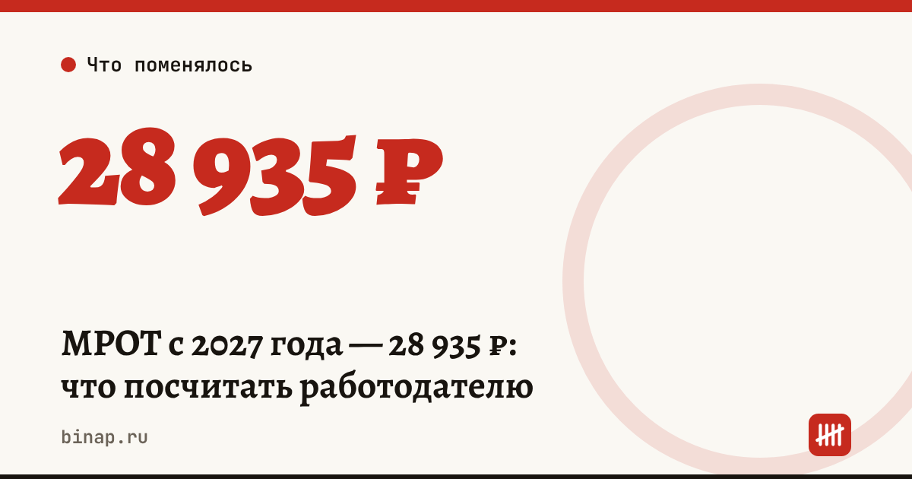

МРОТ с 2027 года — 28 935 ₽: что посчитать работодателю

МРОТ с 1 января 2027 года предлагают поднять с 27 093 до 28 935 ₽ в месяц: Госдума одобрила законопроект в первом чтении 29 октября 2026 года. Закон ещё не принят окончательно, но заложить рост в бюджет на 2027 год стоит уже сейчас.
Коротко
- Сейчас МРОТ — 27 093 ₽, с 1 января 2027 года предлагается 28 935 ₽.
- Прибавка — 1 842 ₽ в месяц на сотрудника, около 6,8% (расчёт редакции).
- Законопроект принят в первом чтении 29.10.2026, дата второго чтения не названа.
- По данным «Ведомостей», министр финансов Антон Силуанов заявил, что к 2030 году МРОТ планируют довести до 35 000 ₽.
- В регионах может действовать свой минимум выше федерального — сверяйтесь с региональным соглашением.
Сроки, изменения и разборы для ИП и самозанятых — каждое утро в Telegram и MAX. Подпишитесь, чтобы не пропустить.
Кого это касается
- Работодателей, у которых есть сотрудники с окладом на уровне МРОТ или чуть выше: зарплата за полную ставку не может быть ниже минимума.
- Сотрудников на неполной ставке: для них минимум считается пропорционально отработанному времени.
- Всех, у кого выплаты привязаны к МРОТ: от него, например, зависит минимальный размер больничного при маленьком стаже или заработке.
Сколько добавится к расходам: расчёт
Расчёт редакции для пяти сотрудников с окладом, равным МРОТ, с тарифом взносов 30%:
| В месяц | В год | |
|---|---|---|
| Прибавка к окладам: 5 × 1 842 ₽ | 9 210 ₽ | 110 520 ₽ |
| Взносы с прибавки по тарифу 30% | 2 763 ₽ | 33 156 ₽ |
| Всего | 11 973 ₽ | 143 676 ₽ |
Если у вас пониженный тариф взносов для МСП, сумма будет меньше. У кого он сохранился, — в статье взносы 15% для МСП в 2026 году.
Что сделать сейчас
- Выпишите всех, чей оклад равен МРОТ или ниже 28 935 ₽ за полную ставку, и посчитайте: (28 935 − текущий оклад) × число людей × 12 месяцев.
- Добавьте взносы по вашему тарифу и заложите сумму в цены и бюджет 2027 года.
- Подготовьте допсоглашения к трудовым договорам с новыми окладами к 1 января — после окончательного принятия закона.
- Проверьте зарплатные платёжки и ведомости, чтобы с января не было расхождений: до 100 000 ₽ за одну ошибку в зарплатной платёжке.
- Следите за вторым чтением: если сумма изменится, пересчитайте.
Частые вопросы
Какой МРОТ будет в 2027 году? По законопроекту, принятому в первом чтении, — 28 935 ₽ в месяц с 1 января 2027 года.
Закон уже принят? Нет, пока только первое чтение (29.10.2026). Окончательную сумму сверяйте после принятия.
Сколько МРОТ сейчас? 27 093 ₽ в месяц.